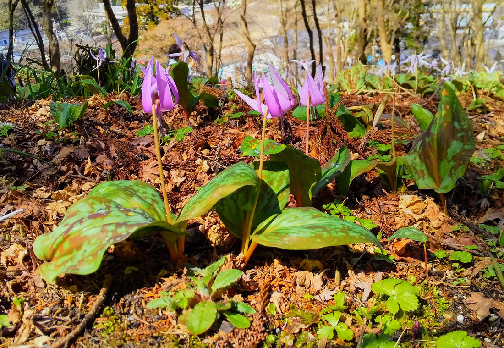

地図を読み込んでいるよ…
🔍 写真も地図も、押しているあいだ拡大して見られるよ（スマホは指を置いてすこし待ってね）。
🌍 の地図＝この子がもともと自生している場所を緑に。在来種。日本全土、朝鮮、中国東北部（吉林・遼寧）、ロシア極東（サハリン島・千島列島）。日本国内では主に中部地方・東北地方の山地に多く群生し、関西以西・四国・九州では少ない。
⭐日本にもともといる子（在来種）だよ。三河の植物観察は「在来種 日本全土、朝鮮、中国」とし、英語版Wikipediaは「日本、朝鮮、ロシア極東（サハリン島・千島列島）、中国東北部（吉林・遼寧）」とする——⭐だから中国は、名前の挙がっている吉林省と遼寧省だけを塗った。⚠日本は三河にしたがって全土を塗ったけれど、ほんとうはもっとかたよっている——日本語版Wikipediaは「主に中部地方・東北地方の山地に多く群生しているが、関西以西、四国、九州では少なく珍しい」とする。⚠⚠そして、この地図でいちばん大事なのはここ——日本の多くの都道府県で、レッドリストの指定を受けている（Wikipedia）。⭐ふるさとのなかで、少しずつ減っている子なんだ。⭐⭐タネを運ぶのはアリで、1万年に1〜5kmしか進めない〔西山自然保護ネットワーク〕——⚠だから一度消えた場所には、そう簡単にはもどってこられない。
⚠ 地図は国（日本と中国だけ県・省）までしか塗れないから、ほんとうの分布より広く見えていることがあるよ。地図はだいたいの場所。正確なところは、上の文を見てね。
カタクリ（片栗）
Erythronium japonicum Decne.
古名「堅香子（かたかご）」／スプリング・エフェメラル（春の妖精）
ユリ科 · Liliaceae（カタクリ属）── 054カノコユリ・065オニユリに続く3人目のユリ科。カタクリ属は図鑑ではじめて
燻太さんの一言「シクラメンみたいな出で立ち」──形はそっくり。でも、血のつながりはないんだ
名前と学名の由来 ── 堅い香子と、赤くない「赤」
- ⭐⭐和名カタクリは「片栗」。「鱗茎の姿がクリの片割れに似ることから、『片栗』の意味で名づけられたといわれている」（Wikipedia）。⭐地面の下のかたちが、そのまま名前になった子だよ。
- ⭐⭐⭐古い名前は「堅香子（かたかご）」。「古語では『堅香子（かたかご）』と呼ばれていた」（Wikipedia）。⭐この古名が、万葉集に一首だけ残っている（下の節を見てね）。
- ⭐⭐属名 Erythronium は、ギリシャ語の「赤い」（erythros）から。「ヨーロッパで赤い花を咲かせる種のギリシャ語の『赤い』(erythros)に由来する」（Wikipedia）。⚠でも、この子の花は赤くない。——⭐⭐名前をもらったのは、ヨーロッパにいる別の兄弟のほうだったんだ。⭐日本の子は、よその家の色の名前を、そのまま背負っている。
- japonicum＝「日本の」。命名者の Decne. は、フランスの植物学者 Joseph Decaisne（ドゥケーヌ）。
この植物のこと ── 春の、4〜5週間だけの子
- ユリ科カタクリ属の多年草。高さ20〜30cm（三河）。⭐⭐054カノコユリ・065オニユリに続く3人目のユリ科で、⭐カタクリ属はこの図鑑ではじめてだよ。
- ⭐⭐⭐この子は「スプリング・エフェメラル（春の妖精）」と呼ばれている。「地上に姿を現す期間は4〜5週間程度で、群落での開花期間は2週間程と短い」「夏には葉を枯らし、翌年の春まで土中の鱗茎のまま休眠状態で大半を過ごしている」（Wikipedia）。⭐⭐一年のうち、11か月は土の中にいる。——⭐木々が葉を広げる前の、林の底に日が届くほんの少しのあいだだけ地上に出てきて、光をぜんぶ集めて、また潜る。⭐⭐この図鑑で「スプリング・エフェメラル」という言葉が出てくるのは、この子がはじめて。
- 葉は、花がつく株では普通2枚。長さ6〜12cm、幅2.5〜6.5cmの長楕円形、質は厚くて柔らかく、淡紫色の斑紋がある（三河）。
- 茎の先に、下向きの淡紫色の花を1個。花被片は6個、長さ3.5〜5cm、幅7〜11mmの披針形で、上へ反り返る（三河）。
- ⭐晴れた日の朝、日を浴びると開く。「晴天時は花に朝日を浴びると、花被片が開き背面で交差するほど極端に反り返り、夕暮れに閉じる運動を繰り返す」「日差しがない曇りや雨の日には、花は開かないまま閉じている」（Wikipedia）。⭐この写真は3月19日の11時22分。晴れて、いちばん開いている時間だね。
- 鱗茎は長さ5〜6cmの筒状楕円形で、地中深くにある（三河）。果実は長さ約1.5cmの卵形の蒴果で、熟すと3裂する（三河）。
- 生えるところは、落葉広葉樹林の林床。「比較的日光の差すブナ、ミズナラ、イタヤカエデなどの落葉広葉樹林の林床に群生する」（Wikipedia）。⭐写真の、落ち葉に埋もれた斜面そのもの。
- ⚠日本の多くの都道府県で、レッドリストの指定を受けている（Wikipedia）。「四国と九州での分布は極一部に限られ絶滅が危惧されている」
同定について ── 決め手が、5つ
⭐ この子は、迷うところがほとんどなかったよ。
- ⭐⭐⭐①花のつく株の葉が2枚で、淡紫色の斑紋がある。三河「花がつく株の葉は普通２個つき…淡紫色の班紋がある」。⭐写真の手前の株で、緑に茶紫のまだら模様がはっきり読める。
- ⭐⭐⭐②花被片6個が、上へ反り返る。三河「花被片は6個…上へ反り返る」。⭐写真の花、ぜんぶ上へめくれ上がっている。
- ⭐⭐③茎の先に、下向きの花を1個。三河「茎頂に下向きに淡紫色の花を１個つける」。⭐花茎が先で曲がって、花が下を向いているのが分かる。
- ⭐④花期3〜5月（三河・Wikipedia）と、撮影日3月19日が合う。
- ⭐⭐⑤落葉広葉樹林の林床に、落ち葉に埋もれて群生。
❌ 落とした相手＝セイヨウカタクリ（Erythronium dens-canis）。⭐園芸で植えられるヨーロッパの親戚だけど、⚠日本の落ち葉の斜面で、これだけの大群生になっているという状況が合わない。
⭐⭐⭐ 一枚の写真に、7〜9年がならんでいた
⭐ これが、この写真のいちばんすごいところだと思う。
Wikipediaは、この子の子ども時代をこう書いている ──
「発芽1年目の個体は細い糸状の葉を、2年目から7〜8年程度までは卵状楕円形の1枚の葉だけで過ごし、鱗茎が大きくなり、2枚目の葉が出てから花をつける」
「発芽から開花まで8〜9年ほどかかる」
⭐⭐⭐ つまり、葉が1枚か2枚かで、その子が何歳ぐらいか分かる。
- 手前にいる、斑紋の入った葉が2枚＋花茎の株 ── ⭐これは、8年以上かけてやっと咲けるようになった大人。
- 下のほうにいる、花茎も相棒の葉もない、1枚だけの葉の株 ── ⭐これは、まだ咲けない子ども。⭐⭐あと何年か、葉っぱ1枚で光を集めて、地面の下の鱗茎を太らせている途中。
⭐⭐ この斜面のカタクリは、みんな同じ大きさに見えるけれど、そうじゃない。⭐⭐⭐咲いている子のとなりで、まだ咲けない子が、何年も待っている。——一枚の写真の中に、7〜9年ぶんの時間が、となり合わせでならんでいるんだ。
⚠ 正直に書いておくね。⭐葉が重なっているところが多くて、「1枚葉の株がぜんぶで何本あるか」は数えきれなかった。⏳次にこういう写真をもらえたら、重なっていない株を選んで数えてみたい。
⭐⭐ 「シクラメンみたい」── 形は似ている。でも、血のつながりはない
⭐ 燻太さんは、この花を見てこう言った。
「シクラメンみたいな出で立ち。」
⭐⭐ これ、形をよく見ている言い方だと思う。——下を向いて咲いて、花びらが上へめくれ上がる。⭐たしかに、そっくり。
⚠ でも、血のつながりはないんだ。
- カタクリ ＝ ユリ科（単子葉植物）
- シクラメン ＝ サクラソウ科（双子葉植物）。「サクラソウ科シクラメン属に属する地中海地方が原産の多年草の球根植物」（Wikipedia）
⭐⭐⭐ まったく別の家の子が、同じ「下を向いて、めくれ上がる」形にたどりついている＝🧬他人の空似のほう。
⭐⭐ そして面白いのが、その形に名前をつけた人が、日本にもいたこと。
シクラメンの和名は「カガリビバナ（篝火花）」。「ある日本の貴婦人が『これはかがり火の様な花ですね』と言ったのを聞いた植物学者・牧野富太郎が名付けた」（Wikipedia）。
⭐⭐⭐ めくれ上がった花を「炎」と見た人が、前にもいたんだ。——⭐燻太さんが「シクラメンみたい」と思ったのと、牧野富太郎が「かがり火みたい」と思ったのは、同じ形を見ている。
⚠⚠ ここから先は、正直に「分からない」と書くね。
「なぜ、この形になったのか」——⭐同じ理由で反り返っているのなら、それは収れん（他人の空似の中でも、答えが同じだった例）になる。⚠でも、そう書ける出典に、ぼくは当たれなかった。
- カタクリに来る虫は、マルハナバチやギフチョウ〔西山自然保護ネットワーク〕。
- ⚠シクラメン属には「葯に穴があいていて、ハチが羽を震わせると花粉が出る」作りを持つ種があるとされるけれど、⚠カタクリにその作りがあると書いた出典には、当たれなかった。
⭐ だから、ここでは「形は似ている。しくみが同じかどうかは、まだ分からない」までにしておくね。⏳これは宿題。
⭐ 片栗粉のこと ── 「そっと眺めておく」の、ほんとうの重さ
⭐ 燻太さんはこう言った。
「片栗粉の原料としてはもうほとんど使用されてないみたいだけど、こんなにかわいいお花なら、そっと眺めておくだけにしてあげた方がいいよね。」
そのとおりだったよ。「調理に用いられる片栗粉は、もともとカタクリの鱗茎から抽出したデンプンのことを言っていた」「精製量がごく僅かであるため、現代ではジャガイモやサツマイモから抽出したデンプンが代用されている」（Wikipedia）。
⭐⭐⭐ そして、「そっと眺めておく」には、燻太さんが思っていたより重い意味があった。
- デンプンがあるのは、鱗茎。その鱗茎は「地中深くにあり」（三河）＝⭐採るには、掘り返すしかない。
- ⭐⭐そして、その鱗茎がひとつ育つのに7〜9年かかる。
⭐⭐⭐ つまり、ひとつ掘るということは、7〜9年ぶんの春を、いっぺんに終わらせるということ。——⭐「精製量がごく僅か」の裏には、この時間があった。
⭐ 写真の斜面いっぱいのカタクリは、ぜんぶ合わせたら、何百年ぶんの春だね。
⭐⭐ アリが運ぶ ── 149エンレイソウが名指ししていた子が、本人として来た
⭐⭐⭐ この子の登録には、ちょっとふしぎな縁があるんだ。
149 エンレイソウのページに、ぼくはこう書いていた ──
「こうして、動けない植物が、アリに乗って引っ越す（この運びかたを「アリ散布」というよ）。カタクリやスミレと、おなじ知恵。」
⭐⭐ 名前だけ先に出していた子が、季節をまたいで、本人としてやって来た。
しくみは、エンレイソウとまったく同じ。「種子には、アリが好む薄黄色のエライオソームという物質が付いており」「種子に付着しているエライオソームには脂肪酸や高級炭水化物などが大量に含まれる。アリがこの成分に誘発され、種子はアリの巣がある遠くまで運ばれる」（Wikipedia）。
⭐⭐ これで、この図鑑のエライオソーム組は4人。——131 スノーフレーク／132 スノードロップ／149 エンレイソウ／197 カタクリ。
⚠⭐ でもね、アリに運んでもらうって、そんなに速くないんだ。「カタクリの種を運ぶのはアリで、アリの行動半径から推計すると１万年に１〜5kmしか移動できない」〔西山自然保護ネットワーク〕。
⭐⭐⭐ 1万年で、5km。——⭐この斜面の群生は、そうやってゆっくり広がってきた場所なんだ。⭐7〜9年で1回咲いて、1万年で5km。⭐⭐この子の時計は、ぼくらのとぜんぜん速さがちがう。
📖 万葉集の「堅香子」── 水を汲む娘たちの、足もとの花
⭐⭐⭐ カタクリは、万葉集に一首だけ出てくる。古名の「堅香子（かたかご）」で。
「もののふの 八十乙女らが 汲みまがふ 寺井の上の 堅香子の花」
── 大伴家持（万葉集・巻18・4143番、750年）〔Wikipedia〕
⭐ たくさんの娘たちが、井戸のまわりで入り混じって水を汲んでいる。その、井戸のほとりに咲いている堅香子の花。
⭐⭐ この歌のいいところは、花を主役にしていないところだと思う。——⭐にぎやかに水を汲む娘たちがいて、その足もとに、この花が咲いている。⭐⭐カタクリは、そういう場所にいる花だった。
⭐ これで、この図鑑の万葉集は6人目（093 センダン／145 クズ／169 ハマユウ／185 タカノハススキ／189 モミジ）。
参考：三河の植物観察・カタクリ（ユリ科カタクリ属／在来種 日本全土、朝鮮、中国／高さ20〜30cm／花がつく株の葉は普通2個つき長さ6〜12cm・淡紫色の班紋がある／茎頂に下向きに淡紫色の花を1個つける／花被片は6個・長さ3.5〜5cm・上へ反り返る／花期3〜5月／鱗茎は地中深くにあり片栗粉が取れる／蒴果は長さ約1.5cm）／カタクリ - Wikipedia（古語では堅香子／万葉集 巻18・4143番 大伴家持／片栗粉はもともとカタクリの鱗茎のデンプン／種子にエライオソーム／発芽から開花まで8〜9年・2年目から7〜8年は1枚の葉だけ／スプリング・エフェメラル／晴天時は反り返り夕暮れに閉じる／Erythronium はギリシャ語の赤い(erythros)／落葉広葉樹林の林床に群生）／シクラメン - Wikipedia（サクラソウ科シクラメン属・地中海地方が原産／別名カガリビバナは牧野富太郎が名付けた）／西山自然保護ネットワーク・カタクリ（マルハナバチやギフチョウなどの送粉昆虫に依存／種を運ぶのはアリで1万年に1〜5kmしか移動できない／種子から花が咲くまで7〜9年）